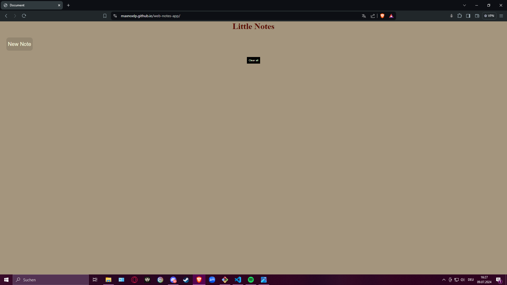
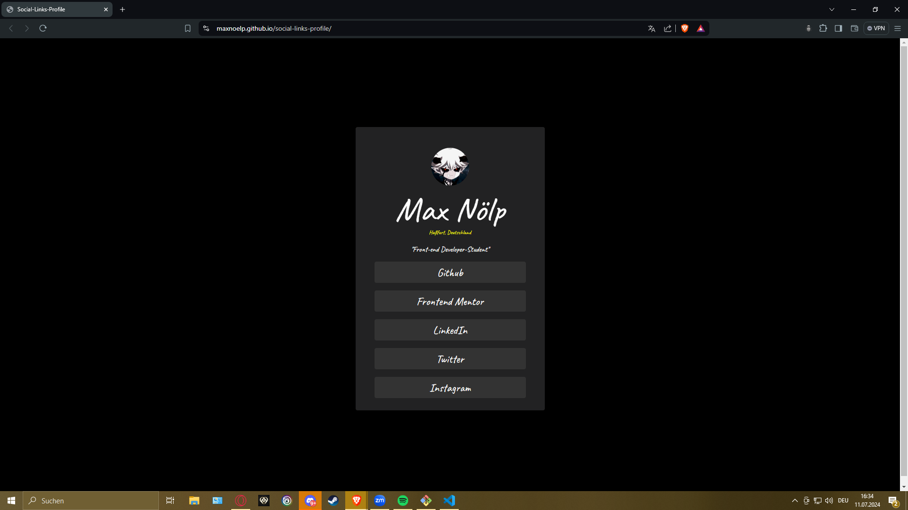

Welcome.
Hello, my name is Max. I am 29 years young and come from Haßfurt(Bavaria). I am still in training to become a frontend web developer. My strengths are ambition, curiosity and motivation. This new stage in my life is a dream come true for me. I want to constantly develop and discover new things.

Coding Skills
Projects
Little Web Notes App
Eine kleine aber feine Notiz App, bei der Notizen gespeichert und wieder abgerufen werden können. Mit einem Klick auf "New Note" wird eine neue notiz angelegt, es können beliebig viele angelegt werden. Zum löschen der Notizen entweder einzeln mit einem doppel Klick in die Notiz oder alle mit "clear all". Hier ist der Link zum Code auf GitHub.
Social Links Profile
Dass hier war eine Aufgabe von Frontend Mentor, umsetzung mit HTML und CSS. Das Design ist schlicht und alle Buttons haben eine funktion. Den Code für diese Aufgabe kann man hier einsehen.
